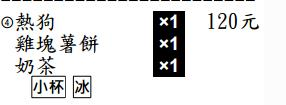

請問
像這種套餐模式的上下分隔線，
可不可以也用在套餐模式之外的其他一般模式，
例如 [分區模式]這樣就可以自己設定在這個主選單的餐點上下要不要畫線，
可以區分各類餐點組合，方便廚房作業還有可以自己想讓客人看到什麼樣的菜單。
還有一個比較進階版不知可不可以，就是如果分區模式有可以分區1分區2的話， 那我在第一個主選單和第3個主選單都設分區1的話，印出來就是在同一區上下兩條線裡面，就算輸入的順序很亂但是列印出來時同樣分區的就會在同一區塊。
想到建議一下不行也沒關係，如果可以有類套餐模式的簡單分區就好用很多了
----------------
還有想請問像這種套餐模式

假設套餐名稱是 69元超值套餐
沙拉可以選 和風沙拉 ， 凱薩沙拉
麵包可以選 全麥麵包 ， 牛奶麵包
湯可以選 玉米濃湯 ， 羅宋湯
-------
如果客人點3個套餐
那輸入時是順序是
69元超值套餐x3
---
和風沙拉 x1 凱薩沙拉x2 (套餐3個沙拉總數就無法超過3個)
--
全麥麵包x2 牛奶麵包x1
--
玉米濃湯x3
那列印出來是
----------------------------------
④ 69元超值套餐 x3 207元
和風沙拉 x1
凱薩沙拉 x2
全麥麵包 x2
牛奶麵包 x1
玉米濃湯 x3
-------------------------------------
這樣...
不行也沒關係
感謝